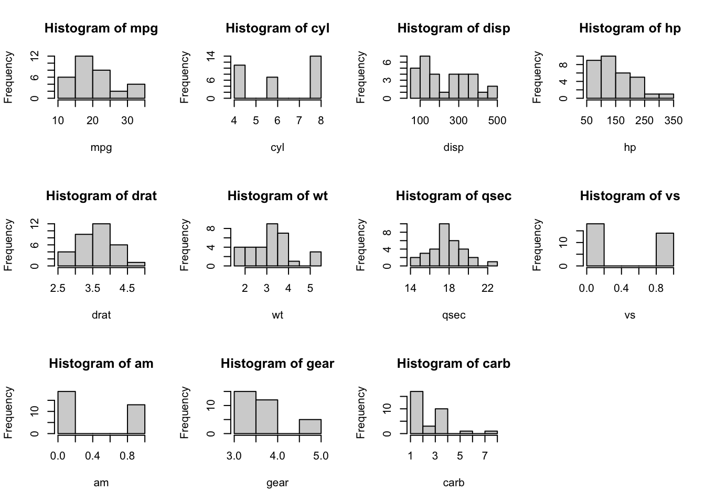

Week3 Loops
3.1 For loops
‘For loops’, sometimes just known as ‘Loops’ are one of the most useful tools in programming and you will find, once you understand how to implement them, that they become your best friends. That being said, it is very common that people like them so much that they are used when they are not necessary, as we will see later.
Simply put, a ‘for loop’ allows us to ‘loop’ through all the elements of a given object (usually a vector or matrix) and perform a command or operation for each element. When combined with ‘IF statements’, ‘for loops’ become very powerful and flexible and allow you to perform almost any task.
Let us start by understanding how a basic ‘for loop’ is constructed, then we will consider some simple examples. The general form of a for loop is as follows:
for (i in x) {
command in terms of i
}
That is, i will take the first value of the object x, perform the command in the brackets with this given value of i, then i will loop to the second value of x and so on. For example:
## [1] 1
## [1] 4
## [1] 9
## [1] 16
## [1] 25This works perfectly but notice that we could also do this using what we called ‘vectorised calculation’, which takes advantage of how R deals with vectors on an element-by-element basis:
## [1] 1 4 9 16 25As another example, consider the following:
## [1] 10 15 20 25 30 35 40 45 50 55 60 65 70 75 80 85 90 95 100## [1] TRUE
## [1] FALSE
## [1] TRUE
## [1] FALSE
## [1] TRUE
## [1] FALSE
## [1] TRUE
## [1] FALSE
## [1] TRUE
## [1] FALSE
## [1] TRUE
## [1] FALSE
## [1] TRUE
## [1] FALSE
## [1] TRUE
## [1] FALSE
## [1] TRUE
## [1] FALSE
## [1] TRUEAgain, was this necessary or could we have used vectorised calculations again? If possible, you should always use the vectorised calculation version of a command as this saves times and processing power. That being said,there are many situations where ‘for loops’ are necessary, not just useful.
Let us return to our mtcars data set seenin the previous chapter and consider a problem regarding plotting histograms of the data:


Now, imagine you wanted a histogram for every variable. Executing the code hist(mtcars) wouldn’t work as the input necessary for this function should be in the form of a single vector of values. However, to overcome this hurdle, we could make use of ‘for loops’:


The above is great, but it would be nice to have them all on one screen together. Note that the code below is not really linked to for loops but is still worth mentioning here.
par(mfrow = c(3,4)) # Changes the plot frame to fit 3 rows and 4 columns of separate plots.
for(i in 1:ncol(mtcars)){
hist(mtcars[,i])
}
This is much better but I would like the individual titles and axis labels to reflect the variable name:
par(mfrow = c(3,4))
for(i in 1:ncol(mtcars)){
hist(mtcars[,i], main = paste("Histogram of", colnames(mtcars)[i]), xlab = paste(colnames(mtcars)[i]))
}
Even this very simply example starts to show you the value and versatility of for loops.
Now, as mentioned above, it is also possible to combine ‘for loops’ with IF statements. For example, the code below counts the number of even numbers in a vector of values:
## [1] 3Exercise 3.1 Is there a quicker and easier way to achieve what has been done above without ‘for loops’?
Exercise 3.2 Can you write a ‘for loop’ that prints out the names of the cars in the mtcars data set which have 8 cylinders? Note, the car names can be found using the rownames(mtcars) command.
In fact, there is actually another way this can be done using conditional extraction which we will talk more about next week.
Exercise 3.3 Remember our IF statement from last week that didn’t work correctly because we used a vector in the conditional statement? i.e.
x <- c(1, 2, 3)
if (x < 0) {
if (x %% 2 == 0){
print(paste(x, "is a negative even number"))
} else {
print(paste(x,"is a negative odd number"))}
} else if (x > 0) {
if (x %% 2 == 0){
print(paste(x, "is a positive even number"))
} else {
print(paste(x, "is a positive odd number"))
}
} else {
print(paste(x, "is Zero"))
}Can you now apply the idea of a ‘for loop’ to get this to work correctly?
3.1.1 Matrices
So far, we have seen how we can Loop through a vector of values to perform certain tasks, but it is also possible to do this over a matrix of values. The only difference is that this requires two loops (one for each index - row and column). For example:
(M <- matrix(round(runif(9,min = 0, max = 100)), nrow = 3, ncol = 3)) # This creates a 3x3 matrix of rounded uniform random values.## [,1] [,2] [,3]
## [1,] 44 86 46
## [2,] 20 98 35
## [3,] 56 34 26for(i in 1:nrow(M)){
for(j in 1:ncol(M)){
print(paste("Element [", i,",",j,"] of M is equal to",M[i,j]))
}
}## [1] "Element [ 1 , 1 ] of M is equal to 44"
## [1] "Element [ 1 , 2 ] of M is equal to 86"
## [1] "Element [ 1 , 3 ] of M is equal to 46"
## [1] "Element [ 2 , 1 ] of M is equal to 20"
## [1] "Element [ 2 , 2 ] of M is equal to 98"
## [1] "Element [ 2 , 3 ] of M is equal to 35"
## [1] "Element [ 3 , 1 ] of M is equal to 56"
## [1] "Element [ 3 , 2 ] of M is equal to 34"
## [1] "Element [ 3 , 3 ] of M is equal to 26"Another very important technique that you will need when working with ‘for loops’ is how to store values in a new vector (matrix) as you finish each loop. This is something that you will use a lot when working through your R based assessments in your Actuarial modules, since you will be working with larger data sets and need to make calculations which then need to be saved for use later on.
As a simple example let us see how we could use a ‘for loop’ to generate some random values and save them in a vector if they satisfy some condition.
Before we start, let us note how you can add a value to an already existing vector
## [1] 1 3 5 7 9## [1] 1 3 5 7 9 11In the above line of code, x has been over-written as the vector which contain all the values of the original vector x but then also includes 11 as well. This type of idea of over-writing a given value using itself has been seen already (count variable at the start of this session) and is a very common technique.
vec <- c()
for (i in 1:20){
rand <- rnorm(1, mean = 0, sd = 1) # This generates a standard normal random variable
if(rand > 0){
vec <- c(vec,rand)
}
}
vec## [1] 0.005512954 1.498507015 0.293155615 0.276509132 2.039636613 1.849125749
## [7] 0.807890904 0.080278717 0.099427783 1.078409010 2.023306983 0.207384631
## [13] 0.515240159Alternatively, you could actually save each value in the vector as a particular element, e.g.
## NULL## [1] NA NA NA 0.1392454 1.2637265 NA 0.7050683
## [8] NA 0.9163221 0.2384281 1.0067351 NA NA 0.4972835
## [15] 0.3291732 2.0054633 NA NA NA 0.3183235In fact, you could have easily set this up to store all the values in a Matrix rather than a vector
## [,1] [,2] [,3] [,4]
## [1,] NA NA NA NA
## [2,] NA NA NA NA
## [3,] NA NA NA NA
## [4,] NA NA NA NAfor (i in 1:4){
for (j in 1:4){
rand <- rnorm(1, mean = 0, sd = 1)
if(rand > 0){
mat[i,j] <- rand
}
}
}
mat## [,1] [,2] [,3] [,4]
## [1,] 0.6653966 NA NA 1.369854
## [2,] 0.5747815 0.2128382 NA NA
## [3,] NA NA NA NA
## [4,] NA 0.5684018 1.056248 NA3.2 While loops
The final tool we will consider in the area of loops, is the so-called ‘WHILE loop’. A While loop is similar to a for loop but instead of simply looping through different values of a specified vector (i in 1:10) it will continue to loop whilst a certain condition holds and will only stop when this condition is no longer satisfied. For example:
## [1] 1
## [1] 2
## [1] 3
## [1] 4
## [1] 5WARNING - Be very careful when using while loops. If you do not write them correctly they can result in your code running infinitely. As an example, try seeing what happens if you forget to increment i to add one each time.
While loops are very helpful when the number of loops required is unknown. For example, imagine we wanted to find the smallest integer for which the sum of all positive integers up to this value was greater than 1000. This can easily be done using a while loop.
## [1] 45## [1] 990## [1] 1035Exercise 3.4 Create a variable called speed and assign this a rounded random uniform distributed value between 50 - 60, i.e. round(runif(1, 50, 60)). Using a while loop, create a code that prints “Your speed is ?? - Slow Down” if speed is greater than 30 then takes 7 off the speed variable. If speed is less than or equal to 30 it should print out “Your speed is ?? - Thank you for not speeding”.
I appreciate this is a lot to take in for those who are not familiar with programming but I assure these ideas become second nature with a little practice. We will use them in a larger exercise in the last session so you can see how and when these things would all be used in a practical example. However, for now, I highly recommend that you complete the exercises in DataCamp on conditional statements and loops (Intermediate R) for extra practice.
There are other versions and common commands used in loops, namely break, next and repeats, but I will leave these for you to explore in your own time (ideally via DataCamp). You will need these for the exercises below.
3.3 Exercises
- Use the command
x <- rexp(20, rate = 0.5)to create a vector containing 20 simulations of an Exponential random variable with mean \(2\). Using a loop, return the number of values that are larger than the sample mean of the vector x. You are allowed to use themean()function.
- Write a
while()loop which prints out the odd numbers from 1 through 7.
- Using
for()loops, generate and print the first 20 values of the famous Fibonacci sequence (starting with \(0, 1\)). Recall, the Fibonacci sequence is obtained by evaluating the next number in the sequence as the sum of the previous two numbers in the sequence.
- By altering your code in the previous question, use a
while()loop to determine how many values the Fibonacci sequence contains before its value exceeds 100,000.
- Use a
while()loop to determine the smallest value of \(x\) such that \[\begin{equation*} \prod_{n=1}^x n > 10^{6}. \end{equation*}\]
- Using a
for()loop, simulate the flip of a fair coin twenty times, keeping track of the individual outcomes (1 = Heads, 0 = Tails) in a vector.
[Hint: You can simulate random numbers that follow given distributions. For example, normal random numbers using rnorm(), exponential using rexp() as seen in Problem 1 or binomial random values using rbinom(). Moreover, the Bernoulli distribution with success parameter \(p \in [0,1]\), which gives a value of 0 or 1, is nothing but a binomial distribution with parameters \(n =1\) and \(p\).]
- Can you solve the previous problem again without the use of
for()loops?
- Using
for()loops, fill a \(5 \times 5\) matrix with simulated values from the Poisson distribution having parameter \(\lambda = 5\) (rpois(n, lambda = 5)). Do this again but without using loops, only ‘vectorised calculations’.
Advanced Extension: Can you modify the above to only fill the matrix with simulated values between 1 and 8? Hint: You will have to use the repeat and break commands.
3.4 Applied Exercises
The problems below are a little more involved and may take some time. Please have a go at these but do not worry if you find this difficult, we will actually see something similar to this again next semester.
- Assume that the daily returns on an asset are normally distributed with mean 0 and standard deviation of 0.01. Assuming that the starting price is £100, write a
while()loop to simulate the daily stock price of this asset until the moment it exceeds £150 or falls below £50.
[Recall: You can simulate a normal random value using the following command rnorm(n, mean = , sd = ) where \(n\) is the number of values you want to simulate]
How many days does it take for the stock price to exceed £150 or drop below £50?
Plot the path of the stock price over time using the
plot()function.Using a
for()loop, repeat the first step 100 times and provide an estimate for the number of days it will take to exceed £150 or drop below £50.Simulate the stock price for exactly 365 days. If the price exceeds £150 or falls below £50, stop the simulation and ask R to print out the value of the stock at this point.
By repeating a similar idea to the previous step 100 times, can you estimate the probability that the stock price will either exceed £150 or drop below £50.
3.5 DataCamp course(s)
- https://www.datacamp.com/courses/intermediate-r (Intermediate R Course)
- https://app.datacamp.com/learn/courses/intermediate-r-for-finance (Intermidiate R for Finance Course)